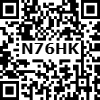

To measure the volume of given colourless and coloured liquids.
Pipette Bracket OPEN 20 ml bracket closed, sample liquids and beakers
Take a 20 ml pipette. Wash it thoroughly with water and then rinse it with the given liquid. Insert the lower end of the pipette into the given liquid and suck the solution slowly till the solution rises well above the circular mark on the stem. Take the pipette out of the mouth and quickly close it with the fore finger. Take the pipette out the liquid and keep it such a way that the circular mark on the stem is at the level of the eyes. Now slowly release the fore finger to let the liquid drop out until the lower meniscus touches the circular mark on the stem. Now the liquid in the pipette is exactly 20ml. This can be transferred to an empty beaker by removing the fore finger.
Tabulation
Serial.Number |
Name of the liquid |
Colour of the liquid |
Nature of the meniscus |
Volume of the liquid |
Serial.Number 1 |
|
|
|
|
Serial.Number 2 |
|
|
|
|
Serial.Number 3 |
|
|
|
|
Report: Exactly 20 ml of various liquids are measured using a standard 20 ml pipette
Note:
1. Keeping the circular mark on the stem of the pipette above or below the level of the eyes will lead to error.
2. When coloured liquids are measured, the upper meniscus should be taken into account.
3. Never suck strong acids or strong alkalis using a pipette.